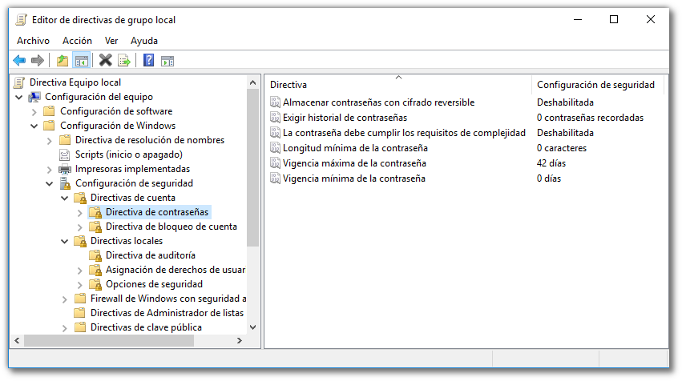

4.1 Contraseñas seguras en Windows
1. Introducción
Establecer una buena política de contraseñas en una empresa u organización es una tarea muy importante que a menudo se suele descuidar. Esta práctica te muestra cómo configurar ciertos aspectos que aumentan la seguridad de las contraseñas y de nuestro sistema, aunque debes tener en cuenta que es posible que se sacrifique la comodidad del usuario.
2. Configuración de contraseñas seguras
Para configurar la contraseña, hay que accede al editor de directivas de grupo local del sistema. Para ello, ejecuta el comando gpedit.msc para acceder directamente.
Una vez en la pantalla de 'Editor de directivas de grupo local', hay que navegar hasta encontrar la categoría Directiva de contraseña (figura inferior).

Se tienen una serie de parámetros que permiten configurar una contraseña segura, son los siguientes:
- Almacenar contraseñas con cifrado reversible.
- Exigir historial de contraseña. Número de contraseñas que se desean recordar, ejemplo: si el valor es igual a 1, no se podrá repetir la última contraseña utilizada.
- Cumplir requisitos de complejidad. Si se habilita, los caracteres que se utilicen en la contraseña, tendrán una cierta variedad y complejidad, ejemplo: Camina-100 (mayúsculas, minúscula, números y caracteres no alfanuméricos).
- Longitud mínima de la contraseña. Valor que indica cuál será el tamaño como mínimo de la contraseña (número de caracteres).
- Vida útil de la contraseña.
Referencia: Directiva de contraseñas.
Obra publicada con Licencia Creative Commons Reconocimiento No comercial Compartir igual 4.0